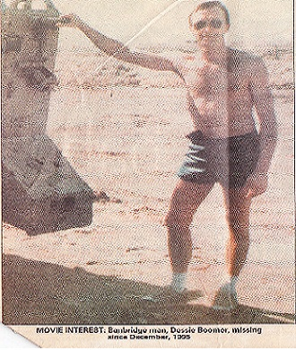
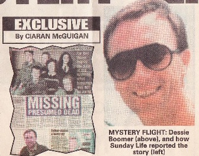

Fabricated Sunday Life "Movie Bid" Article
Story of missing Ulsterman interests Hollywood film moguls

MOVIE BID OVER
MYSTERY FLIGHT
MYSTERY FLIGHT
HOLLYWOOD scriptwriters are planning to turn the mystery disappearance of Ulsterman, Dessie Boomer, into a hit movie, Sunday Life can reveal.
The Banbridge father-of five was last heard of nearly six years ago, when he vanished without trace, while making his way back to Ulster after working on a Libyan oil field.
The baffling disappearance of Mr Boomer, and the rest of the passengers on Piper Lance flight 9H-ABU, remains one of the greatest mysteries in aviation history.
And, now the story will be told on the silver screen - with the help of Sunday Life
A Maltese public inquiry last year ruled that Mr Boomer, and five others, died when travelling on the single-engine plane, which apparently went down over the Mediterranean during
The Banbridge father-of five was last heard of nearly six years ago, when he vanished without trace, while making his way back to Ulster after working on a Libyan oil field.
The baffling disappearance of Mr Boomer, and the rest of the passengers on Piper Lance flight 9H-ABU, remains one of the greatest mysteries in aviation history.
And, now the story will be told on the silver screen - with the help of Sunday Life
A Maltese public inquiry last year ruled that Mr Boomer, and five others, died when travelling on the single-engine plane, which apparently went down over the Mediterranean during

That theory was fuelled by newspaper reports that linked the pilot of the ill-fated aircraft, Carmelo Bartolo, with the murder of the Palestinian terrorist leader. And, it has intrigued a team of movie scriptwriters from Hollywood, who have now started work on the story.
They contacted Sunday Life, who highlighted the mystery in a series of articles from 1995 onwards, to firm up on the facts behind the story.
And, now they are expecting a bidding war between movie-makers for the rights to their script.
"It is a fascinating mystery, made even more fascinating by the fact it is real."
The film industry here is a bit sensitive at the minute, after the September 11 tragedies, but we hope that it will settle down again, and we can move the project on to the next stage."
They contacted Sunday Life, who highlighted the mystery in a series of articles from 1995 onwards, to firm up on the facts behind the story.
And, now they are expecting a bidding war between movie-makers for the rights to their script.
"It is a fascinating mystery, made even more fascinating by the fact it is real."
The film industry here is a bit sensitive at the minute, after the September 11 tragedies, but we hope that it will settle down again, and we can move the project on to the next stage."
violent storms. But, unconvincing evidence, and suggestions of dirty tricks, mean that the case remains shrouded in mystery. The public hearing was told that there were six possible explanations for the
disappearance of the men. Among them was the the story that the plane had been sabotaged, or hijacked by Islamic terrorists, following the murder, five weeks earlier, of the Islamic Jihad leader, Fathi Shaqaqi.